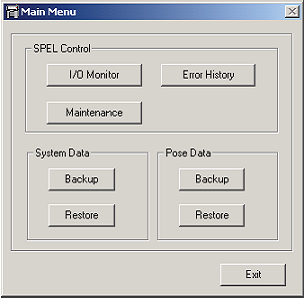
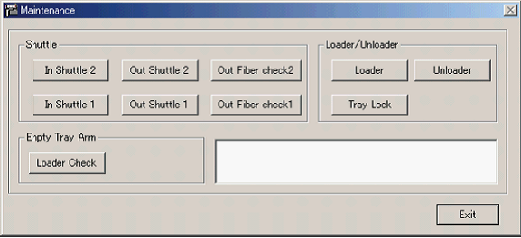
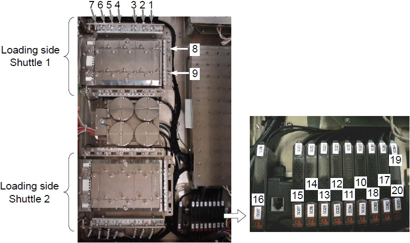
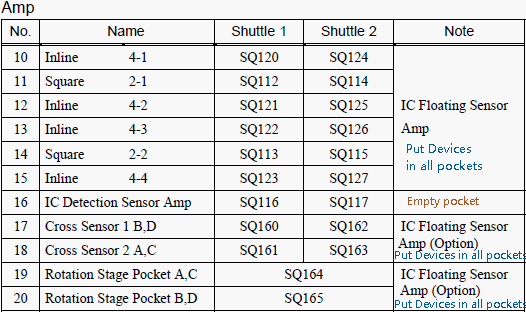
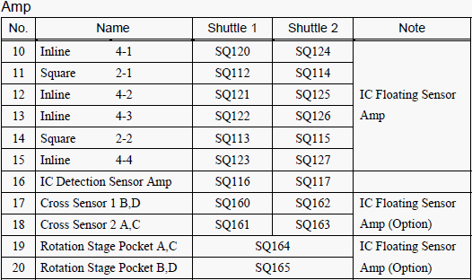
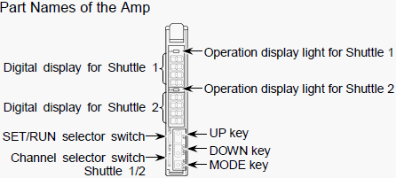
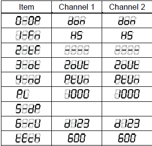

A2-4 How to adjust about device floating sensor of Input shuttle ( 4 )
Fiber sensor adjustment for NS-8000
Loading side Shuttle Sensor Adjustment (Fiber type)
* This is an excerpt from the manual: NS8000 series Users Manual: 11.1 Loading side Shuttle
NOTE When testing device is changed, check the sensors and operations from the [Maintenance] dialog.
To display the [Main Menu] Dialog
(1) Click the [Maintenance]-<Controller> icon and show the [Main Menu] dialog.

(2) Click the [SPEL Control] group box-<Maintenance> button. The [Maintenance] dialog appears.

11.1.2 Adjusting the IC Floating Sensor and IC Detection Sensor of the Loading side Shuttle NS8080 / NS8080W
Layout of Sensor and Amp NS8080 / NS8080




Checking the setting of the Sensor and the Amp NS8080 / NS8080W
(1) Switch the SET/RUN selector switch to “SET”.
(2) Set the channel selector switch to the corresponding Shuttle number (1, 2).
(3) Press the mode switch and the settings are displayed in the following item order. Check the settings.

(4) Switch the SET/RUN selector switch to “RUN”.
Adjusting the IC Floating Sensor of the Loading side Shuttle NS8080 / NS8080W
(1) Place the devices in all pockets of loading side Shuttle 1 and 2.
(2) Click the <In Shuttle 1> button in the [Maintenance] dialog.
(3) Press the RETRY button on the Operation Panel and then the Shuttle moves. The Shuttle moves to the IC loading position and the IC detection sensor position back and forth by pressing the RETRY button. Move The Shuttle to the IC loading position.
(4) Press the PAUSE button on the operation panel to open the door.
(5) Switch the channel selector switch of the loading side Shuttle 1 to “1”. (Channel “2” for Shuttle 2)
(6) Hold the MODE key on the sensor amp for more than three seconds.
The output of the sensor amp is adjusted automatically. When the adjustment completes, the digital display shows approximately 1000.
(7) Close the door and press the START button on the operation panel.
(8) Regarding the loading side Shuttle 2, click the <In Shuttle 2> button and follow the same procedure as <In Shuttle 1>.
(9) After the sensor adjustment completes, remove the devices from the loading side Shuttle 1 and 2.
Adjusting the IC Detection Sensor of the Loading side Shuttle NS8080 / NS8080W
(1) Make sure that no devices are placed in the pockets of loading side Shuttle 1 and 2.
(2) Click the <In Shuttle 1> button in the [Maintenance] dialog.
(3) Press the RETRY button on the Operation Panel and then the Shuttle moves. The Shuttle moves to the IC loading position and the IC detection sensor position back and forth by pressing the RETRY button. Move The Shuttle to the IC detection sensor position.
(4) Switch the channel selector switch of No.16 IC detection sensor amp to “1”. (Channel “2” for Shuttle 2)
(5) Press the PAUSE button on the operation panel to open the door.
(6) Hold the MODE key on the sensor amp for more than three seconds. The output of the sensor amp is adjusted automatically. When the adjustment completes, the digital display shows approximately 1000.
(7) Place devices on the pocket of loading side Shuttle 1 and 2.
(8) Close the door and press the START button on the operation panel.
(9) Press the RETRY button and move the Shuttle pocket to check the sensor reaction.
(10) Regarding the loading side Shuttle 2, click the <In Shuttle 2> button and follow the same procedure as <In Shuttle 1>.
(11) After the sensor adjustment completes, remove the devices from the loading side Shuttle 1 and 2.